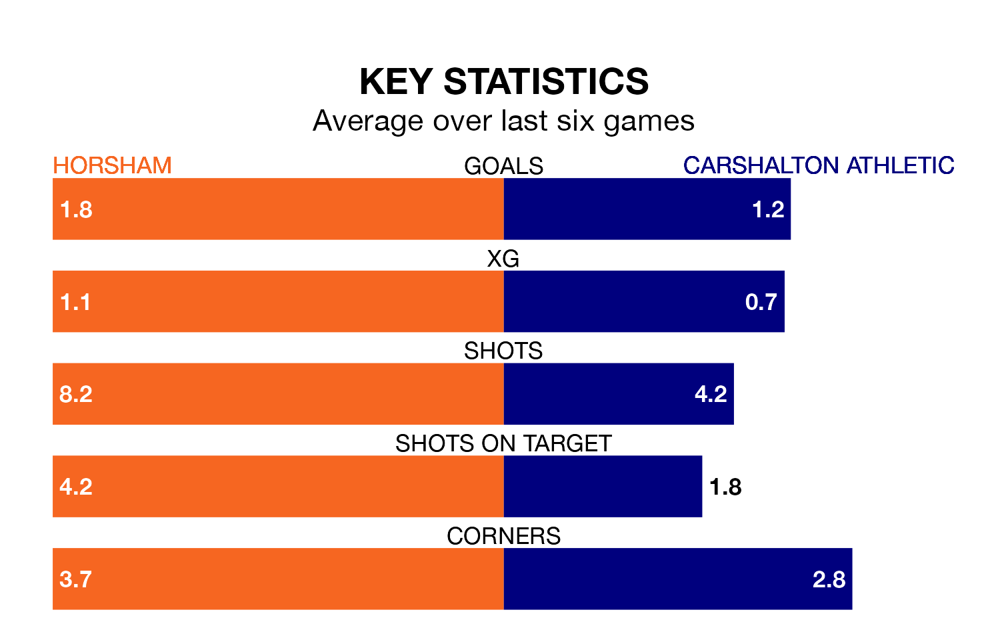

Carshalton Athletic face a challenge to maintain their high-scoring form away against a tight Horsham defence on Saturday.
With 59 goals in 33 games, Carshalton are the fourth-highest scorers in the Isthmian Premier Division ahead of the 3pm kick-off.
They face a Horsham side who have scored 43 in 30 matches, but conceded only 33 goals, putting them second among the league's tightest defences – only AFC Hornchurch have conceded fewer goals.
Horsham are third in the table after 30 games, of which they have won 16 and drawn seven, earning 55 points.
Carshalton are four places behind the home team in seventh, with 13 wins and 10 draws putting them on 49 points.
In the last 10 years, Horsham and Carshalton have played each other on 10 occasions. Horsham won three of them, Carshalton four, and they drew three times.
On average, Horsham scored 1.3 goals and Carshalton 1.9 in those matches.
Their last meeting was on October 21, when Horsham won 2-1 away.
Horsham are in good form in the Isthmian Premier Division, with four wins and a draw from their last six games.
With a win and four draws over that period, Athletic's form is much worse – they have taken seven points from 18, compared to Horsham's 13.
Horsham's last match was on Tuesday, a 3-1 win against Kingstonian.
Carshalton beat Chatham Town 2-0 last time out, on March 2.
Updated: 09:34 (UTC), 08/03/24